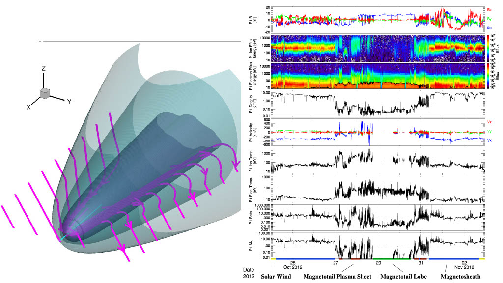
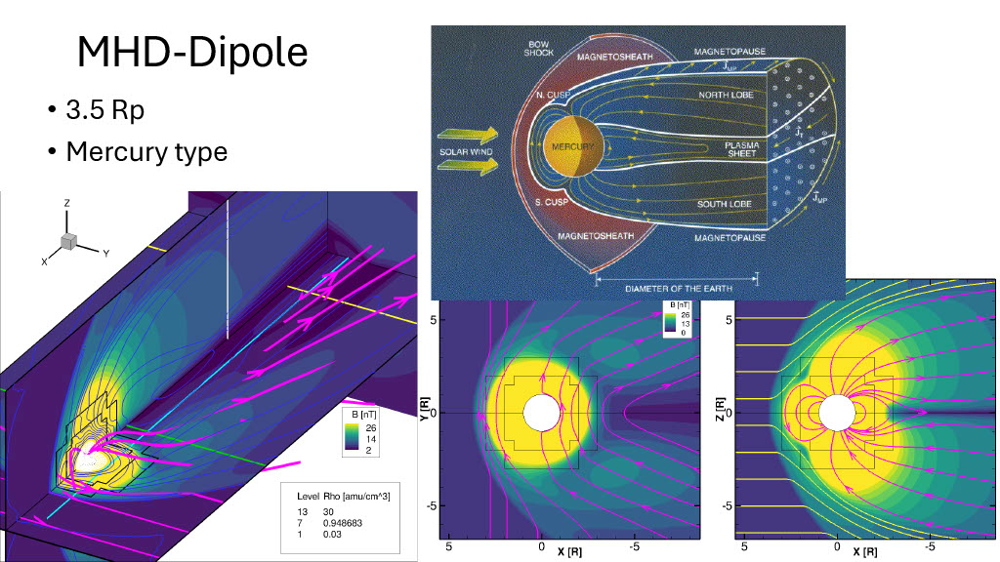
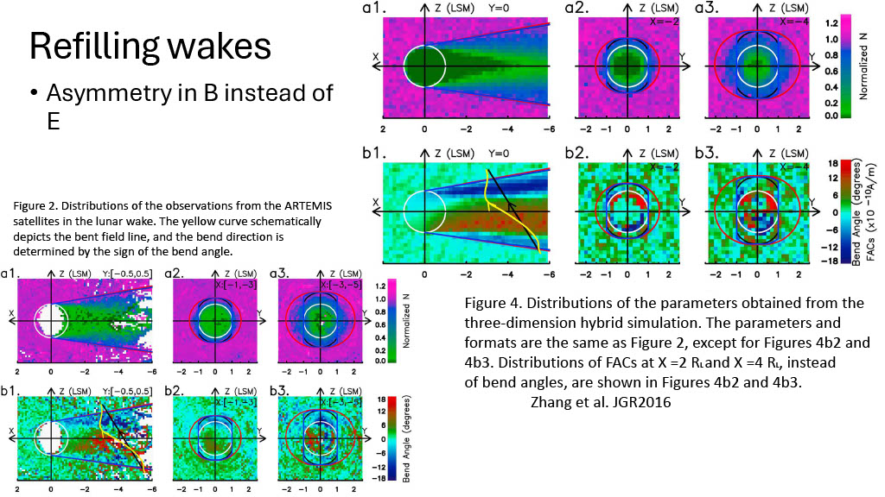
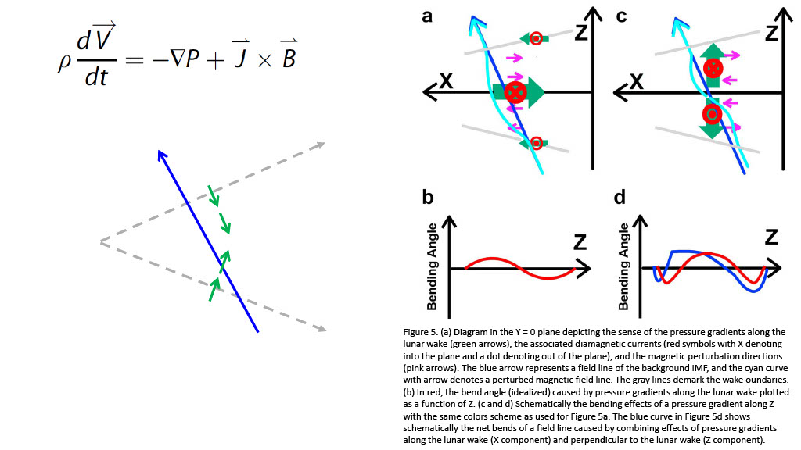
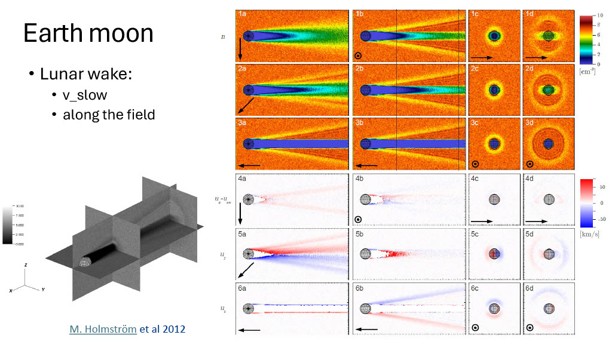
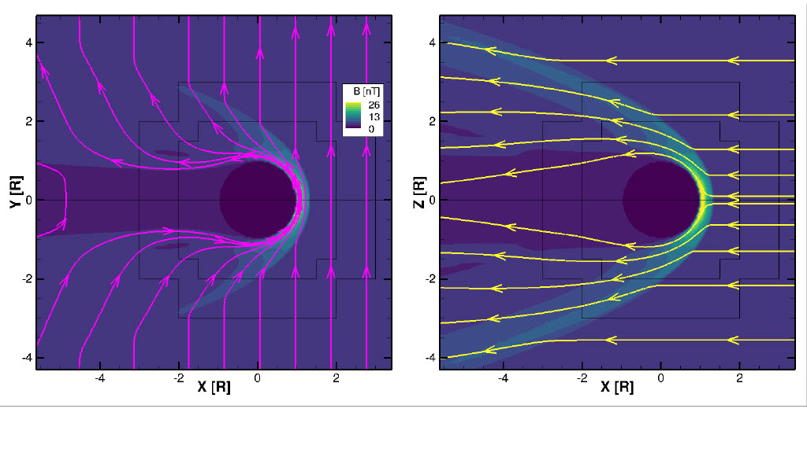

Previous Research Results
Earth beta iso-surface vs ARTEMIS observation. Right panel: [Liuzzo et al. 2022]

IMF By against a small body with dipole (top right internet image)

The tail (right panel [Zhang et al. 2016])



Same By vs dipole case
